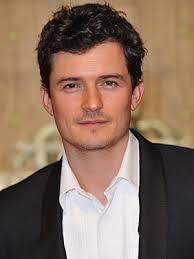
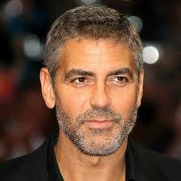
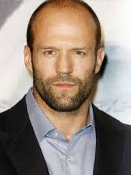
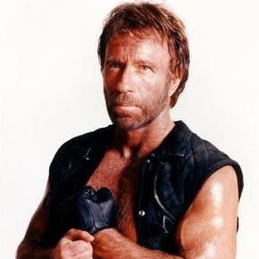

Orlando Bloom | Orlando Jonathan Blanchard Bloom (Canterbury, Kent; 13 de enero de 1977), conocido habitualmente como Orlando Bloom, es un actor británico. Su salto a la fama se produjo con dos papeles protagonistas en grandes producciones: en 2001 el del príncipe elfo Legolas en El Señor de los Anillos: la Comunidad del Anillo, primera película de la trilogía basada en la novela de J. R. R. Tolkien1 y en 2003 el del herrero Will Turner en Piratas del Caribe: la maldición del perla negra.
Tras los éxitos mencionados se estableció en Hollywood, donde ha protagonizado varias películas como Elizabethtown y Kingdom of Heaven. Sus trabajos más recientes incluyen la película coral New York, I Love You y sus papeles en Sympathy for Delicious y Main Street. Bloom hizo su debut teatral en el escenario del Duke of York, con un papel en la obra In Celebration, que se representó hasta 2007. El 12 de octubre de 2009, Bloom fue nombrado embajador de buena voluntad de Unicef. |  |
|  | George Timothy Clooney (Lexington, Kentucky, 6 de mayo de 1961) es un actor, director, productor y guionista estadounidense. Ha sido galardonado con cuatro Globos de Oro, dos Óscar, y un BAFTA. También es conocido por su activismo político, siendo Mensajero de la Paz de Naciones Unidas desde 2008.
Clooney hizo su debut como actor en 1978, y más tarde obtuvo un amplio reconocimiento por su papel como Doug Ross en la serie de la NBC ER (1994-1999), por el que fue nominado dos veces para los premios Emmy. Gracias a ello, comenzó a interpretar varios papeles principales en películas como Batman y Robin (1997) u Out of Sight (1998). En 1999, protagonizaría junto a Mark Wahlberg, Ice Cube y Spike Jonze, la película Tres reyes, una bien recibida sátira de guerra ambientada durante la Guerra del Golfo. En 2001, la popularidad de Clooney creció gracias al que sería, hasta ahora, su mayor éxito comercial, Ocean's Eleven, la primera de la trilogía, siendo esta una adaptación de la película homónima de 1960, que protagonizaron la Rat Pack. Al año siguiente, hizo su debut como director con el thriller biográfico Confesiones de una mente peligrosa.
Ganó un Óscar al mejor actor de reparto por su papel en la película Syriana (2005) y fue nominado como mejor actor por sus interpretaciones en Michael Clayton (2007), Up in the Air (2009) y Los descendientes (2011). En 2013, recibió por la producción de Argo el Óscar a la mejor película junto a Ben Affleck y Grant Heslov. Es la única persona que ha sido nominada a los Óscar en seis categorías diferentes.
En 2005, la revista TV Guide lo colocó el número uno en su lista de las "50 estrellas más atractivas de todos los tiempos".
La labor humanitaria que desempeña el actor incluye su defensa en la búsqueda de soluciones para el Conflicto de Darfur, la recaudación de fondos para los damnificados de los terremotos de Haití de 2010, el océano Índico de 2004 y de los atentados del 11 de septiembre de 2001, y la creación de documentales para crear conciencia sobre las crisis internacionales como Sand and Sorrow. Además de su labor como mensajero en la ONU, es miembro del Council on Foreign Relations.
En abril de 2014, se anunció su compromiso con la abogada británica, de origen libanesa, Amal Alamuddin.1 | George Clooney |
Jason Statham | Jason Michael Statham (Derbyshire, Reino Unido, 12 de septiembre de 1967),5 es un actor de cine británico, conocido por sus papeles en las películas de Guy Ritchie como Lock And Stock, Snatch: Cerdos y Diamantes y Revólver, así como en Crank, 1 y 2, la trilogía de Transporter, La Carrera de la Muerte, Blitz,Los Mercenarios 1 y 2, y The Mechanic. Recientemente se unió a la saga de películas Fast & Furious, haciendo un cameo en Fast & Furious 6 y siendo el villano principal en Fast & Furious 7. |  |
 | Arnold Alois Schwarzenegger Pronunciación inglesa: /'?w?rts?n?g?r/, alemana: ['a?n?lt 'al??s '?va?ts?n???g?], (nacido el 30 de julio de 1947 en Graz, Estiria, Austria), es un exfisicoculturista, actor y político austriaco nacionalizado estadounidense que ejerció como trigésimo octavo gobernador del estado de California desde 2003 hasta 2011.3
Schwarzenegger ganó fama en todo el mundo como un icono de las películas de acción de Hollywood, conocido por sus papeles protagonistas en películas como Conan the Barbarian, Terminator, Commando, Total Recall (Desafío total en España y El vengador del futuro en Hispanoamérica) y Predator. Fue apodado el roble austríaco y el roble de Estiria en sus días de culturismo, Arnie durante su carrera como actor y más recientemente el Governator (una contracción de Governor y Terminator). | Arnold Schwarzenegger |
| CHUCK NORRIS | Criatura cibertrónica enemiga natural de Dios, hermano del Pato Donald y del calvo tetraplégico de los X-Men (¿Quien qué crees que lo dejo tetraplégico?). Se dedica a pegar patadas giratorias a tíos con sombreros y nachos. Aunque no lo reconozca, está claro que desciende del Fary, y es hermano mellizo del Teto Medina. Es bien conocida su manía de no pasar en la calle más de cinco minutos seguidos sin liarla. Fue presidente del Mundo (es un secreto no se lo digas a nadie) desde el 2005 hasta el 2008 (porque, según los españoles, "tiene un buen par de huevos").
Espera ansiadamente su venganza final hacia Carod Rovira, que acontecerá el día que éste lleve sombrero tejano.
Su mayor y único error en la vida, fue prestarle un espacio de radio a un alumno suyo llamado Pablo Motos (Es broma, Chuck NUNCA comete errores).
Es un ferviente defensor del pastafarismo, ya que en la guerra de Vietnam se volvió loco comiendo pasta, gambas fritas y cinco clases de arroz (salsas aparte), al recluirse como prisionero voluntario para derrotar al ejército enemigo (a base de miradas fijas, véase "Hechos sobre Chuck Norris"). Se ha dicho de él: "Chuck Norris tiene dos expresiones, y una de ellas es con barba". Uno de sus mayores aliados es el bueno de Bud Spencer.
Es muy importante para Chuk llevar pistolas, para así poder tirarlas al suelo antes de atacar.
Si respetas estas normas, serás discípulo de Chuck Norris:
- Chuck Norris siempre tiene la razón.
- En caso de que Chuck Norris no tenga la razón, aplicar la norma 1.
- No puede haber dos normas sin una tercera...
|  |